Operations
CAUTION
This document requires a strong update.
It can only be useful for historical purposes.
Basics
Launching Audiveris
First, move to the directory where you've extracted the Audiveris archive. Audiveris can be launched by different means:
- A double click on the jar file audiveris-3.0.jar located in the dist folder of the installation directory.
- Using the command line:
- For a simple launch:
$> java -jar dist/audiveris-3.0.jar
-
- For a launch with additional JVM parameters (this example provides additional memory to the
application):
$> java -Xmx256m -jar dist/audiveris-3.0.jar
-
- The full command line syntax is the following:
Most of the time, there is no need for command-line arguments. They are useful when a batch mode (i.e. with no user interface) is required, or to set some parameters beforehand.
A comprehensive list of command-line arguments is available in the javadoc API of the Main class.
- For a simple launch:
- Other possibilities include:
- Using the .bat file located in the dist folder. You can add parameters to the file, so this is a convenient way to register these parameters
- Using the ant utility from the src folder, and running the run target.
- Using NetBeans IDE. For this, after creating a NetBeans project in the installation directory, you'll have first to rename the build-for-netbeans.xml file as build.xml and then ask NetBeans to launch the application.
Possible Operations
The purpose of this section is to identify and quickly present the various operations that an end user may perform with Audiveris. Additional details will be provided in the other sections of this document.
- Get the scan of a sheet of music
-
Whatever the origin of the scan, please pay attention to:
- The scan resolution
- The best fit is around 300 DPI. Less than that results in glyphs hard to recognize. More than that results in huge waste of CPU.
- The image format
- All the major formats can be used: GIF, PNG, BMP, etc. The only limits are imposed by the underlying JAI library (more details available on: XXX)
- Try to get gray or black & white images, where a pixel is stored on 1 byte. This is by far the most efficient configuration.
- Translate a sheet of music
- The most common operation is to load a sheet image, let Audiveris run through the SCORE step, manually make some adjustments if needed, and then write the resulting score material into a file using MusicXML format.
- The automatic processing is organized in a sequence of steps which are detailed below. Every step, with the exception of SCALE, has a related sheet view which provides visual feedback on what is being done. The user can modify the parameters values used for a specific processing. The user can also directly modify the shape assigned to one or several glyphs, by selecting these glyphs and use menu items or buttons to modify the assignment.
- Run a script
- A script defines a sequence of actions to be performed on a sheet. It is typically recorded as you manually interact with a sheet, and can be saved on disk.
- At any time you can load a script file and it will run to its end. You can then go on and any action you'll perform on the sheet will be recorded as an additional task at the end of the script.
- Scripts can be run in batch mode as well as in interactive (non-batch) mode.
- Train the evaluator
- At the heart of Audiveris, a neural network is in charge of finding the best shape(s) to fit a given glyph.
- Such a neural network needs to be properly trained, and the Audiveris distribution provides an already-trained version of it. However, the training is very dependent upon the diversity and the coverage of the training set. By manually assigning shapes, you can feed the trainer with additional data, and come up with a more performant evaluator.
- Tune the application
- Audiveris provides many ways to inspect intermediate results, through specific graphic charts, dedicated sheet views, context-dependent tables, etc.
- There is no hard-coded constant in Audiveris code. All values are defined as "logical constants" and backed up on disk. A general purpose interface is available in interactive mode to browse these constants and modify them if so desired. Any new value is then made available for the current and the next runs of Audiveris.
Interactions
User Interface
Here is a quick presentation of the main user interface. This main windows is organized as follows:
- The top pane is dedicated to the Score View of one sheet. We can have several sheets opened, in that case there will be several sheets tabs. The score view is organized horizontally, all systems are presented one besides the other.
- In the center, there are several Sheet Views, roughly one per step. All the sheet views present the same organization of a sheet of music where the various systems are located one above the other. The Picture view is the original image (perhaps deskewed), while the other ones display synthetic objects.
- The bottom left pane is the Log Pane where all messages are logged.
- The bottom middle pane is the Errors Pane where the set of translation errors are displayed.
- The right pane of the window is used by the Boards Pane which is a vertical
assembly of boards. The Boards Pane contant depends on the selected Sheet View. Here are the various types
of Boards available:
- Pixel: Displays the current position (point or rectangle) in pixels in the sheet space. The 'Level' field is filled only in the Picture sheet view, it gives the level of gray for the selected pixel. Note that apart Level, all the other fields are also input fields. Just modify their values and press return to modify the selected location.
- Run: Displays the current lag Run if any
- Section: Display the current lag Section if any, with parameters related to the section itself. The Id field is both output and input, so a Section can be directly selected via its ID. The 3 last fields (layer, dir and role) describe the relation between this section and a Stick if any
- Glyph: Displays parameters of the selected Glyph if any. The 'Id' field allows to browse all glyphs, while the 'Known' field handles only the glyphs with an assigned shape, and the 'Symb' field the glyphs that are symbols. A glyph is collection of sections, and it is never deleted. A glyph is said 'Active' if its sections point back to it, so the selection of one of its sections will select that glyph. The current glyph shape is displayed, both the graphic and the name of the shape, and a button allows to deassign the shape at once.
- Focus: Allows to browse the whole sheet for specific shapes of glyphs. It also allows to switch the sheet display for all glyphs, just the known (shape assigned) or just the unknown ones, just the translated (to score entity) or just the untranslated ones.
- Neural: Displays the result of the glyph evaluation by the neural network, the 5 best shapes are displayed, with their related doubt (1.0 is the best value, infinity is the worst). The color gives information about the decision made: green means an accepted shape, red a non-accepted shape, red background color indicates a shape manually discarded.
- Check: There are many different Check boards, but they are all organized as a table which displays a suite of checks and their results for the glyph at hand.
Manual Interactions
Besides the predefined steps which operate on the whole set of sections and glyphs, any manual interaction can only be performed on selected glyphs. So this section first describes how to set one or several glyphs, then goes through the possible actions.
- Selection
-
An entity can be selected:
- By typing its ID (section ID, glyph ID) in the proper board. The ID of a section, or the ID of a glyph never changes, whatever the actions performed on the sheet. This is the reason why many log or error messages use the glyph ID.
- By pointing to it with the mouse in the sheet view (or in the score view). A left click selects a section (if there is one at this location) which in turn selects a glyph if this section is assigned to a glyph. Other glyphs can be added to the selection, by pressing the Control key while pointing to another glyph in the sheet view.
- By using a lasso, a rectangle displayed by dragging the mouse (left button) in the sheet view while a Shift key is pressed. To be selected, the glyphs must be fully enclosed by the rectangle
- The current location is indicated by the crossing of vertical and horizontal brown lines. Note that the score view and the sheet view are synchronized regarding the location selection.
- The coordinates of the selection are displayed in the Pixel board for the sheet view, while coordinates expressed as a SystemPoint are displayed just under the score view.
- According to the current selection, the various boards have their content updated dynamically. In particular, the Neural board runs on the current selection and displays the best evaluations. Note that if several glyphs are selected, the evaluation is computed against a compound dynamically built from all the selected glyphs.
- Actions
-
On the selected entity (or entities), several manual actions are possible:
- Assignment
- A shape is assigned to the selected entities. This manually assigned shape will never be called into question by the program. Only another manual operation can change this assignment.
- Deassignment
- A null shape is assigned to the selected entities. Each of the previously assigned entities registers its former shape in a personal blacklist. Doing so, the shape that has been manually deassigned won't be reassigned by the program. Only a manual operation can change this.
- Merging
- The selected glyphs (more precisely the sections they are composed of) are assembled into one new compound glyph. If the new glyph is found to have the same signature than an existing glyph, they are considered as being the same entity.
- Segmentation
- The selected glyphs are looked up for the presence of verticals (such as potential stems, or shorter vertical segments). The remaining sections are then assembled into leaf glyphs.
- Injection
- Score entities, as they appear in the score view and are exported to MusicXML, are "translated" from assigned glyphs by the ScoreBuilder class.
- There is no "direct injection" of any score entity to the score structure. This is consistent with the rationale that Audiveris is a music scanner, not a score editor. Manually injecting score entities is typically an editor feature, and should be addressed by connecting an external score editor to Audiveris MusicXML output.
- Unless such editor can be tightly integrated with Audiveris, this unability to inject score entities may be felt as a limitation, perhaps to be addressed in a future Audiveris release.
Scripts
The loading and processing of a sheet produces a related script, that the user may save on disk or discard.
Here after is the script file which corresponds to the actions performed on the 'Chula.png' sheet as described in the quick start example.
Its understanding is straightforward: the tag name defines an action (step, assign, segment, deassign, export) associated with its proper parameters. You can manually edit the script, but note that the glyphs are designated via their ID, a simplistic solution to be secured in a future release of Audiveris.
chula.script.xmlScore Export
A score can be exported to a file, using MusicXML format (V2 for the time being, as this is the most common version).
Here is the export of the 'chula.png' sheet, processed through the quick start example:
chula.xmlMidi Export
A score can also be exported to a file, using MIDI format 1.
A direct MIDI playback can also be launched, please refer to the Example documentation.
Menu description
Here is a quick catalog of the various menu items, as found on Audiveris main user interface.
-
Sheet - All these commands deal with the sheet at hand
-
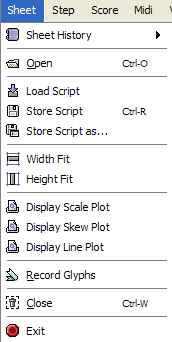 Sheet History List the more recent sheet files you've loaded Open Select a file that contains a printed sheet of music. Most graphic file formats should be usable, provided the pixel info uses a grey scale of 256 values. Load Script Select and run a script file Store Script Save the current script of the sheet Store Script as... Save the current script of the sheet in a specified location Width Fit Adjust the zoom ratio so that the sheet WIDTH is fully displayed in the window Height Fit Adjust the zoom ratio so that the sheet HEIGHT is fully displayed in the window Display Scale Plot Display histogram of run lengths for foreground (black) and background (white) pixels. This gives the general scale (interline value) of the sheet. Here is a scale plot example produced by the SCALE step. Display Skew Plot Display histogram of measured slopes of longest horizontal sticks. This gives the angle to de-skew the image. Here is a skew plot example produced by the SKEW step. Display Line Plot Display histogram of horizontal projections of black pixels. This indicates area for each staff line. Here is a line plot example produced by the LINES step. Record Glyphs Save on disk the definition of recognized glyphs as material for future training of the evaluator. For knowledgeable users only. Close Close the current sheet, and release all resources linked to it. Exit Exit the application. If you have pending unsaved scripts, you'll be prompted to save them. -
Step - Launch the processing of a step on the sheet at hand
-
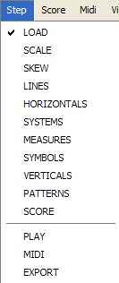 <Any Step> Select the target in this menu which lists in order the defined processing steps, as described in Step class documentation. Note that you can only move forward. Direct access to any step is available from the navigation frame on the left of the window
-
Score - All these commands deal with the score part of the sheet at hand
-
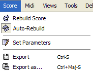 Rebuild Score Clean up the score, then translate the glyph shapes into score entities Auto-Rebuild Should Audiveris rebuild the score on each manual modification of the user. Disable this when dealing with a large system to keep good response time. Set Parameters Assign values to global score parameters Export Export the current score, using MusicXML format Export as... Export the current score, using MusicXML format, into a specified location -
Midi - All these MIDI commands deal with the score at hand
-
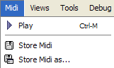 Play Launch the Midi playback of the whole score Store Midi Save the current score, using MIDI format Store Midi as.. Save the current score, using MIDI format, into a specified location -
Views - These commands define switches used in different views, from top to bottom: score view, sheet views, log pane
-
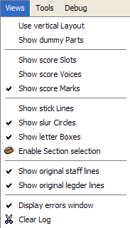 Use vertical layout Organize the systems display one below the other (vs. one next to the other) Show dummy parts Should the score view display the empty artificial system parts Show score Slots In the score view, display the vertical blue lines that indicate time slots Show score Voices In the score view, display the different voices found, as colored lines between the participating notes Show score Marks In the score view, display the marks that indicate insertion of forwards Show stick Lines In the sheet symbol view, display the mean line of every selected stick. Show slur Circles In the sheet symbol view, display the approximating circle arc of any selected slur. Show letter Boxes In the sheet symbol view, display the bounding boxes of each OCR'ed character. Enable Section selection Should we select sections (vs. glyphs) Show original staff lines In the sheet LINES view, display in yellow the original staff lines that have been removed Show original ledger lines In the sheet HORIZONTALS view, display in yellow the original ledger lines that have been removed Display errors window Should we display the window dedicated to the detected errors Clear log Erase all messages in the log pane -
Tools -
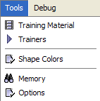 Training Material Verify and potentially discard glyph material used to train the evaluator Trainers Launch and monitor the training phases of the evaluators Shape Colors Select the color display for each recognized shape Memory Display the current memory occupancy Options Set the various constants used by Audiveris software -
Debug -
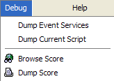 Dump Event Services Dump the listeners currently registered on the event services Dump Current Script Dump the script of the actions performed on the current sheet Browse Score Display and browse the hierarchical information about the current score Dump Score Print main score information on the output console -
Help -
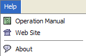 Operation Manual A direct link to this documentation Web Site Launch a browser to Audiveris web site About Display information about Audiveris version, revision, launch mode and related web-site
Steps
NOTA: This section on steps needs to be updated for certain pictures, however the logic still apply.
| Step Name | Tab | View | Featuring |
|---|---|---|---|
| LOAD | Picture | Picture View | Image pixels |
| SCALE | no | no | Run lengths |
| SKEW | no | [Skew View] | Horizontal filaments |
| LINES | Lines | Lines View | Staff Lines |
| HORIZONTALS | Horizontals | HLag View | Ledgers, Endings |
| SYSTEMS | Systems | Systems View | Bertical bar lines for Part/System definition |
| MEASURES | no | Idem Systems View + Score skeleton | Barlines for Measures definition |
| SYMBOLS | Glyphs | Glyphs View | Symbols Glyphs |
| VERTICALS | Verticals | VLag View | Stems |
| PATTERNS | no | no | Stems, Slurs, Texts |
| SCORE | no | Full Score View | All score entities |
| PLAY | no | Dedicated Zong! console | Playback |
| MIDI | no | no | Writing MIDI file |
| EXPORT | no | no | Writing MusicXML file |
To present the various operations, and the related user interface, we'll use a tour based on the usual sequence of processing steps, since nearly every step has a related view
Load Step
The following image represents the main window of user interface, just after a picture has been loaded
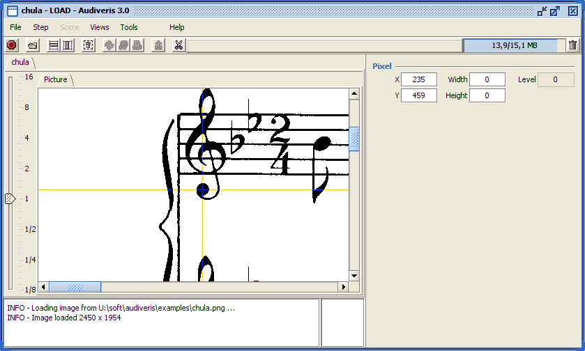In this example, we have a black and white image, so the grey level of the current pixel is either 0 (black foreground) or 255 (white background). The mouse is currently on a pixel of the C Clef, so the "Pixel" board of the data panel reports a 0 level value for abscissa 235 and ordinate 459.
By dragging the mouse, while keeping the shift key pressed, we can define a rectangle. The x and y values are the coordinates of the upper left corner, and the width and height are the dimensions of the defined rectangular area.
Scale Step
This step aims at computing the general "scale" of the music sheet, which is basically the average vertical distance between two staff lines.
To do so, we use a very simple algorithm, based on vertical runs of foreground (black) pixels and vertical runs of background (white) pixels.
The black histogram gives the average line thickness, and the white histogram the white interval between two staff lines. The interline value is thus defined as the sum of these two values.
This step has no related sheet view. But, using the menu File > Scale Plot, we get a separate chart as displayed below:
- The red histogram describes the lengths of the black runs, with a sharp peak on value 3 for this example.
- The blue histogram displays the white runs, with also a peak on value 18 for this sheet example.
For this sheet example, the main interline value is thus 3 + 18 = 21 pixels. And this value will drive the computation of nearly all parameters used in the recognition process.

Skew Step
The purpose of this step is to compute the average skew angle of the staff lines for the whole sheet. This of course is just an average value, since all staff lines may not be strictly parallel.
If the absolute value of the computed slope exceeds a given threshold, then the image is rotated (de-skewed) is the opposite direction, so as to ease the later detection of vertical and horizontal sticks.
We can display the sheet view related to the skew computation, as in the following picture. Nota: if this view is not displayed, check the property "omr.SkewBuilder.displayFrame" using the Options tool. The "common" sections are colorized in colors close to green or blue, while the sections that compose the "significant" horizontal sections are colorized in red. We can notice that the staff lines are the main contributors to the long horizontal section.
Notice that the Data Panel exhibits two additional boards:
- The "Run" board displays information about the run designated by the mouse location. The selected run here starts at abscissa 200 (we have horizontal runs in this view) and is 312 pixel long. The average grey level along the run is 0, since here it is made of only foreground pixels with 0 as gray level.
- The "Section" board displays data that pertains to the current section (a section is a set of contiguous runs). A section is given an "Id" to ease its future handling. The fields labelled "X", "Y", "Width" and "Height" represent the bounding rectangle of this (here horizontal) section. The fields labelled "Layer" and "Dir" are actually not used for this step.

We can also get the following chart, by using the menu File > Skew Plot:

Lines Step
This step is about staff lines, to properly detect all staff lines and "remove" them from the sheet.
The detection is driven by the horizontal projection of foreground (black) pixels. A dedicated chart, displayed from menu File > Line Plot, makes this more obvious as can be seen on the following chart. We use a threshold (at roughly half the maximum histogram value, and indicated by a vertical red line on the chart), and every regular series of 5 peaks above this threshold defines the 5 stick areas supposed to contain one staff line each.

The processing is then performed stick area per stick area. In such area, we retrieve the long horizontal sticks that compose the staff line.
The detected lines are then cleaned up: The underlying pixels are erased from the original picture, and a specific algorithm is used to extend crossing objects (objects that were overlaid upon the staff lines).
The cleaned data is visible on the following view, where former staff lines have been replaced by synthetic lines:

Note that, by using Views > Show original staff lines, we can switch between:
- The display of the former line pixels (colorized in yellow),
- The display of synthetic lines and of extended crossing objects.
Here is the display of retrieved staff lines:

Here are two zoomed view of details from a similar sheet, first the original staff line pixels, then the resulting data, where line pixels have been removed, and crossing objects have been carefully extended (note the extension goes until the synthetic staff line):
 Changed for:
Changed for: 
Horizontal Step
This step retrieves and removes the horizontal sticks that are recognized as ledgers of alternate endings. The following figure shows that the ledger for a 'A' note has been removed and the two parts of the note head have been properly joined into one glyph (a black note head.
 Changed
for: 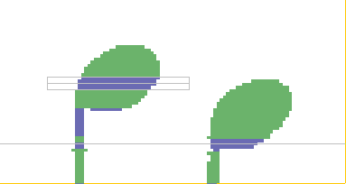
Changed
for: 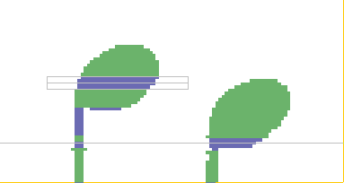Bars Step
This step retrieves and does not remove the vertical sticks that are recognized as bar lines (either thick or thin bar lines). Notice in the following figure that the glyph of the bar line is properly assigned the shape name "THIN_BAR_LINE".
Notice also that, by clicking with the mouse on the related barline glyph, a new boards gets visible in the boards pane, labelled "Bar check". It contains a table of all results for a suite of checks applied to the glyph at hand before accepting it as a barline glyph. Other tests are performed, using for example the location of the other barlines of the same system, but this one is focused on the characteristic of just the glyph at hand.
The table contains one row per check:
- T/F is true/false boolean for covariance of the measured variable. Covariant means "larger is better".
- The following number (here 1) is the relative weight of the check within the suite.
- Then the name for the value checked. "Top" measures the ordinate difference between the top of the candidate barline glyph and the upper line of the staff. Values are stated in fractions of interline.
- The the measure value is displayed with green, orange or red color, depending on how this value fits with respect to the defined range.
All fields in this table have tooltip text that is displayed when simply moving the mouse over them.

Symbols Step
In this step, browsing through the yet unassigned sections, we aggregate connected sections into symbol glyphs, and try to recognize these symbols. This of course works only for symbols with a rather fixed appearance, such as clefs or time signatures on the following picture, it does not work for constructions like notes with stem, chords, etc...
For example, we have correctly recognized "BRACE", "G_CLEF", "FLAT", "TIME_TWO_FOUR", "DOT" and "STRUCTURE".
The mouse is currently on what is called a structure, recognized as such by the evaluator, which is a structure of to-be-segmented smaller parts (note head, stem, flag).

This step also focuses on non-recognized glyphs that may be the result of undesired segmentation. This frequently occurs because of staff line removal for symbols such as F clef or common time signature.
The algorithm used is to browse through all unknown glyphs, ordered by decreasing weight, and to try to aggregate neighbors that are other unknown glyphs of the same system. If the result of this combination leads to some recognized symbol, then we keep it as a (compound) glyph. Otherwise, we don't keep the compound.
This cares for symbols that are typically segmented by the removal of staff lines, despite the efforts made to keep crossing objects connected. This happens frequently for bass clefs, or for common time signatures.
Verticals Step
This step aims at retrieving all the vertical sticks which are either stems, or vertical parts of alternate endings. (Nota: just the stems are extracted for the time being).
The following image shows the various stems detected, displayed in yellow color, each stem with its main line.
Notice also that pointing on a retrieved stem (or on just a candidate stem) displays a "Stem check" board with the detailed result of stem tests.

Leaves Step
The stem extraction has led to the creation of numerous "leaves", which we now try to assign a shape to. The "Leaves" step thus recognized all the individual leaves of the following image (most of the time, these leaves are note heads, or flags, or beams).

Just like symbols, leaves may have been unduely segmented. The difference between the two images below is the building of a compound, properly recognized as a void notehead.
 Changed for:
Changed for: 
Cleanup Step
This is a final cleaning up step, focused on glyphs unduely segmented to stems. For example, accidentals such as sharps, naturals or flats are symbols which actually contain one or two (small) stems. If these symbols are not recognized during the SYMBOLS step, then their stems are extracted and new leave glyphs are then tried, generally to no avail.
For the time being, we simply call these stems into questions. To do so, we try to cancel any stem which has no connected recognized leave. Then, we build new glyphs from these now unassigned sections. If we get to recognized glyphs, then we keep these glyphs, otherwise we "resurrect" the stems.
Score Step
The purpose of this step if, starting from the set of recognized glyphs, to translate each of them into proper score entity.
Note that several such glyphs may be translated to a single score entity. This is the case for all the glyphs that compose a key signature: the collection of all related sharps for example are assigned to one key signature score entity.
The result is a complete Score hierarchy, whose components are displayed in the Score view. Here they will still need some manual adjustments, before being exported to MusicXML.
This closes the series of automated steps, since the adjustments are performed manually. They are described in detail in the Manual Interactions section.
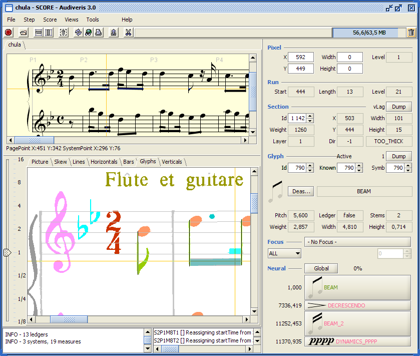Tools
Shape Colors
This interface is used to ease the setting of shape colors. It is a very basic interface, which gathers a typical color chooser with a selection for shape ranges and individual shapes.
The policy is to assign a color to a shape range. A shape range for example can be all note heads, or all rests. And by default, all shapes within the range are assigned the color of the range, unless of course we assign them a specific color.

Training Material
The purpose of this "Glyph Verifier" is to provide a user interface to review visually some or all of the various glyphs which are used for training the evaluator.
The main objective is thus to easily identify glyphs which have been assigned a wrong shape. Using them as part of the training base could make serious damage in the performance of the evaluator. So the strategy, when such a wrong glyph has been identified, is simply to delete the glyph from the base.
Here is an example of the glyph verifier:

The top panels are dedicated to selectors, in that order:
- The Sheet selector. It allows to select one or several sheets from the base at hand (which by default is the global /train/sheets directory
- The Shape selector. Only the shapes that are contained in the selected sheets in the Sheet selector are displayed here. And you can select some or all shapes form the displayed list.
- The Glyph selector. Similarly, only glyphs whose shape is selected in selected sheets are displayed in the list. You can manually select the glyph instances you want to review.
The large panel, on the lower right side, is dedicated to the display of the selected glyphs, using their own coordinates. Notice that glyphs that belong to separate sheets, can thus happen to have similar coordinates and thus be displayed as overlapping glyphs.
The lower left panel is composed of two main parts:
- The Navigator to drive the loading and display of glyphs from the selection as it comes out of the selectors. You can navigate through the loaded glyphs.
- The Glyph panel, similar to the one that appear on the main Audiveris windows, is used to display information about the glyph at hand, together with the evaluations performed by the Neural Network evaluator. The "Deassign" button can be used to discard a wrong glyph: this is implemented through the mere deletion of the underlying glyph XML file.
By default, this user interface looks for glyphs files under the /train/sheets directory. However, from the Trainers interface, you can ask to Verify glyphs (see that interface). In that latter case, the Training Material interface is automatically loaded with the corresponding glyphs, which may be part of either the whole glyph base (the default), or just the core glyph base.
Trainer
This interface is dedicated to the proper training of the Neural Network evaluator. The display is as follows:

- The upper part is for the Repository, in charge of selecting and loading the glyph XML files, as
stored from the previous sheet recognitions. Actually, we use this panel, only when we want to identify a
Core part within the whole glyph base.
To build the Core part out of the whole set of recorded glyphs, it suffices to define the maximum number of similar shapes (20 is a good guess) and press the "Select Core" button. The /train/core directory will be emptied and repopulated by the core selected glyph files.
- The lower part is used to train the Neural Network evaluator.
- On the left, radio buttons allow to select either the whole base or the core base. Default is
to select the whole base.
- Ability to choose between a re-train, which consists in retraining from scratch, and only an inc-train, which works incrementally on top of the previous training sessions. With say 6000 glyphs in the whole training base, training the Neural evaluator along 2500 iterations takes a whole night... So be aware of this, and back-up the evaluator file (/config/neural-network.xml) before playing with the trainer.
- Several key parameters for training a Neural network : the momentum and learning rate allow to influence the convergence of the training, although they should be kept close to their default values. Max error (residual error) and epochs (number of iterations) are two different ways to stop the training, since the processing stops when either of these is reached.
- The trainer always stores on disk the snapshots of the latest best configuration. This slightly slows down the training, but guarantees to keep the really best configuration found so far. This is the default behavior, but we can force the trainer to select only the last configuration (via the "Use Last" button).
- On the upper right part, we find the trainer parameters and commands:
- On the lower right part, a Validation panel is used to test the current evaluator tuning against the selected population (either the Whole base, or the Core base, according to the selection made via the radio buttons. Note that we can train and validate on different bases). We explicitly flag the glyphs which are either not recognized or (worse) mistaken for another shape. The corresponding Verify buttons, allow to visually check these questionable glyphs.
- On the left, radio buttons allow to select either the whole base or the core base. Default is
to select the whole base.
Options
This interface, accessible from Tool > Options, allows to interactively display and modify data related to Audiveris classes:
- Logging level
- Logical constants
The display is a kind of JTreeTable, a combination of a tree on the left side, where the hierarchy of packages, subpackages and classes is displayed, and a table on the right side, where details of the containing classes are available for display and modification.

The picture above represents a typical Options view:
- We are in the package named "sheet", (actually, its full name is "omr.sheet", but we drop the ubiquitous "omr." prefix) and the class named "LinesBuilder", in charge of retrieving and removing the staff lines.
- This class has a logging level, currently assigned to "INFO". This information comes from the config/logging.properties file, but can be modified on the fly, thanks to this interface, to any legal logging value (such as DEBUG, INFO, etc...). NOTA: these logging level modifications are meant to be temporary, and thus not stored on disk. For persistent modification, please edit the logging property file directly.
- The class also contains several logical constants, which are application-level parameters, whose precise value is kept separate from the algorithmic code. For example, the second constant, named histoThresholdFrac, is a java variable declared in the LinesBuilder class. It is a Constant.Double, whose current value is 0.5. A tip text is displayed, which says "Peak threshold stated as a ration of maximum histogram value". In other words, this defines the threshold that indicates a staff line on the histogram built with horizontal projections.
There is a predefined list of types available for such constants (for details, please refer to the JavaDoc of class Constant) :
- Constant.Boolean
- Constant.Color
- Constant.Double
- Constant.Integer
- Constant.String
Another possible type is Scale.Fraction which is a double, whose unit is the interline value. For example, in a sheet with interline value of 20 pixels, a Fraction of 0.15 will represent 3 pixels. It's a way to specify a length regardless of the actual sheet interline value. In the Options window, when such a Fraction value is displayed, its counterpart in pixels is also displayed provided that the current sheet has already had its scale computed. Otherwise, just a question mark is displayed. Please refer to details in Scale JavaDoc.
How do we define the current value of such logical constant ? The JavaDoc of class ConstantManager explains this mechanism in details. The overriding sequence is defined as follows:
- First the value as defined in the source code,
- Then, if the constant name is found in the file named config/run.default.properties, the related value is used.
- Finally, the user home directory may contain a file named .audiveris/run.properties. Is such file exists and contains the constant name, then its related value is taken for the constant. This last file is not meant to be manually edited by a user, it is automatically updated each time the user uses the Options interface to modify a constant value, thus making the modification persistent for the subsequent runs of the application.
End of Operation Manual